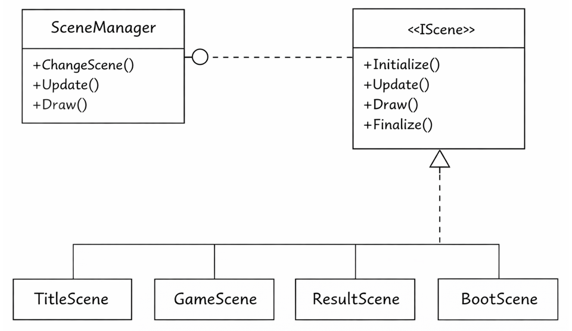
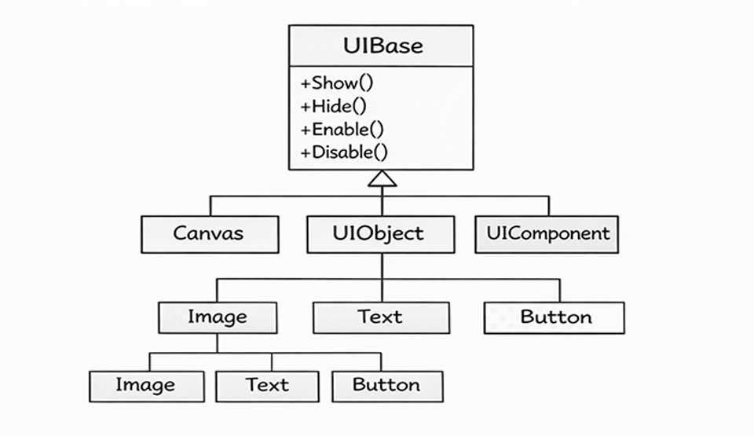
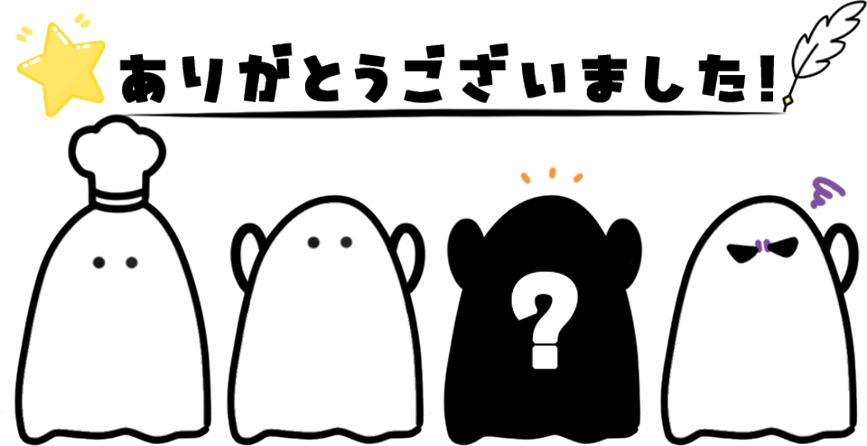

１人から最大４人で遊べるわちゃわちゃ協力クッキングゲーム。
たくさん来る注文された料理を完成させよう！
お邪魔してくるいじわるなおばけもいるよ👻
画像
ゲーム内のあらゆるオブジェクトを管理しやすくするために、しっかりとルールを決めた継承を構築しています。
これによって、共通処理(描画、座標変更、衝突判定など)のコードの重複をさせず、新しいギミックやUIの追加を簡単にしています。
ゲーム内の動的オブジェクトはすべてActorクラスを基底としています。
Actor：位置情報(Transform)や当たり判定(Collider)を持つ基底クラス
Character：ステートマシンを持ち、移動やアクションを行う動的な存在
Gimmick：プレイヤーが動かすこと(Interact)可能な固定オブジェクトたち

IScene(基底クラス)に各ゲーム画面(タイトル、ゲーム、リザルト)のインターフェースを実装しており、SceneMangerによってまとめて動きを管理しています。

プレイヤー操作を「コントローラー入力・AIの行動」と「アクションの実行」を分けています。
PlayerControllerもしくはNPCControllerが入力を取得し、共通のStateMachineがそれぞれの行動を受け取って状態の遷移を行います。
これによって、プレイヤーとNPC(AI)が同じように動くようにしました。
⭐AIの実装時にキャラクター自体の行動を変更する必要がなくなる
→デバックや拡張がしやすくなった！
実装：PlayerStateを通して、待機・歩き・走る・料理などの状態をクラス化し、自由に切り替えができます。
UI要素もゲームオブジェクトと同様にUIBaseを基底とした継承を行っています。
これにより、UIアニメーションやUI表示の制御を管理しています。
また、UIを描くための下敷きとしてキャンバスを作成しています。
キャンバスを移動すると関連するUIも一緒に移動するため、アニメーションなどの演出面ですべてのUIにそれぞれ処理を追加する必要がなくなります。
⭐キャンバスのみの適用で簡単にUIが追加できる！
UIInteractIcon：プレイヤーがギミックに近づいたときに表示されるアイコン
UIScore / UITimer：ゲームの進行状況を反映するUI
Canvas：UI作成時の下敷き。Canvas内での位置変更等もできる

文字列比較(ファイルパスやIDの検索など)に付随する余分な処理を減らすために、コンパイル時や実行時に文字列をハッシュ値に変換しています。
文字列比較を整数比較に置き換えることで、パフォーマンスを向上させることができます。
ColliderとCollisionManagerにより、物理的な動きを管理しています。
GhostBody：物理的な判定はないが、透明な判定のみを検知します。
→例)キッチンのまな板の前に立つと「食材を切る」判定を行う
Unityエディタをステージの配置ツールとして使っています。
Unity上でオブジェクトを配置したり、ゴーストインタラクト判定の設定を行い、その内容をJsonファイルで書き出しています。
書き出したJsonファイルを内製エンジンに読み込むことで、Unityで配置した見た目通りのステージがそのままゲーム内に表示されます。
⭐Unity内で画面を見ながら直感的にステージが作れる！

今回の制作では、ゲームとして動くことだけでなく 「保守性」 「拡張性」 「パフォーマンスの向上」の3つに重点を置き、実践の場として開発しました。
オブジェクト指向設計を意識し、機能の追加(新しい調理器具やステージの追加など)にも対応できるようにしています。
